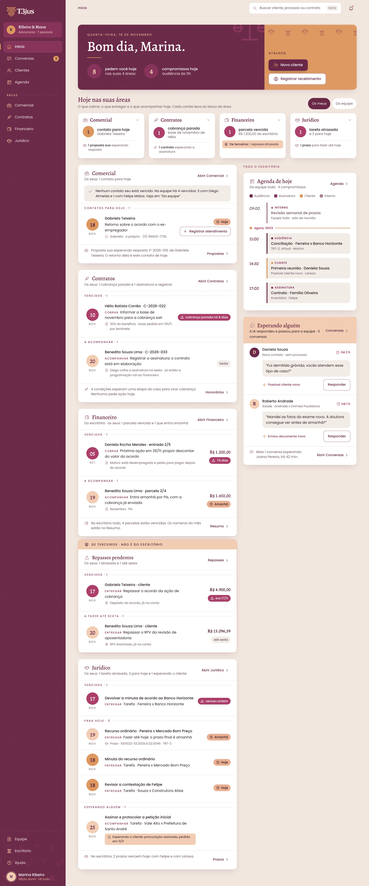

Os meus (o principal)
No alto, o hero aprovado com dois números do dia (o que pede ação dela e a agenda). Abaixo, a faixa “Hoje nas suas áreas”: um cartão por área, na ordem do menu, com no máximo dois números, que leva ao bloco. Depois, um bloco por área, na mesma ordem, com os itens em grupos (Vencidos, Para hoje, A acompanhar) e no máximo 5 itens. O Comercial é o bloco Contatos de hoje aprovado. No Financeiro, os repasses (dinheiro de terceiros) ficam numa folha própria, com a faixa âmbar, e nunca somam com o do escritório. À direita, a parte comum: Agenda de hoje e Esperando alguém.
Abrir: inicio.html?estado=dona (estreite a janela para ver o celular)